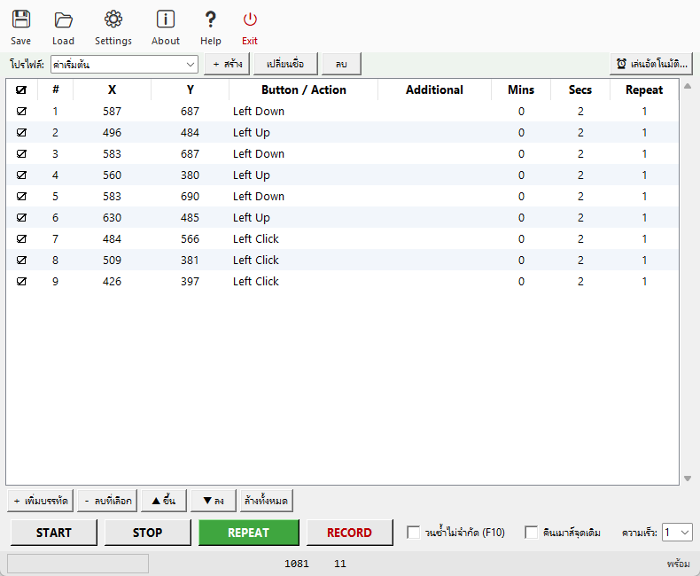

สั่งเมาส์และคีย์บอร์ดทำงานแทนคุณแบบอัตโนมัติ — อัดครั้งเดียว เล่นซ้ำได้ไม่จำกัด
ฟรี โอเพนซอร์ส ไม่มีโฆษณา ไม่มีล็อกอิน ไฟล์เดียวจบ

ตารางคำสั่งแก้ได้ทีละแถว + ปุ่ม START / STOP / REPEAT / RECORD + โปรไฟล์หลายชุด
AutoMouseMacro.exe แล้วดับเบิลคลิก (ไม่ต้องติดตั้งอะไร){ชื่อ} และคลิปบอร์ดplugins/ เป็น Action ใหม่ทันที (มี 10 ตัวให้: Screenshot, Toast, Webhook ฯลฯ)--validate ตรวจสคริปต์ก่อนปล่อยงานจริง|| ได้ สายใดจริงก่อน = จริงทั้งนิพจน์ (short-circuit) · ผสม && ได้ (แน่นกว่า) · เก็บผลรวมเป็นตัวแปรด้วย >ชื่อ · .ahk export/import ครบ| โปรแกรมนี้ | AutoHotkey | TinyTask | |
|---|---|---|---|
| อัดแล้วเล่นซ้ำ | ✅ ง่ายมาก | ⚠️ ต้องเขียนสคริปต์ | ✅ |
| แก้รายการทีละแถว | ✅ ตารางแก้ได้เลย | ❌ แก้โค้ด | ❌ |
| คลิกตามภาพ | ✅ + กรอบ + threshold | ⚠️ ImageSearch | ❌ |
| schedule / watchdog / สุ่มแถว | ✅ ครบในตัว | ⚠️ เขียนเอง | ❌ |
| เงื่อนไขในสคริปต์ + ตัวแปร | ✅ If Image/Pixel/Variable/Loop/Time | ✅ ต้องเขียนสคริปต์ | ❌ |
| ปลั๊กอินขยาย Action | ✅ ไฟล์ Python เดียว | ✅ | ❌ |
| ภาษาไทย | ✅ ทั้งโปรแกรมและเอกสาร | ❌ | ❌ |
py auto_macro.py script.json --loop # วนไม่จำกัด py auto_macro.py script.json --shuffle # สุ่มลำดับแถวทุกรอบ py auto_macro.py script.json --watchdog 10 # จบแล้วเริ่มใหม่เอง (พัก 10 วิ) py auto_macro.py script.json --max-minutes 60 # safety timeout: หยุดเองหลังเล่น 60 นาที py auto_macro.py script.json --validate # ตรวจสคริปต์อย่างเดียวไม่เล่น (exit 1 เมื่อพบแถวมีปัญหา) py auto_macro.py script.json --stop-file C:\stop.flg # สร้างไฟล์ = หยุดทันที
เหมาะกับ Windows Task Scheduler — ตั้งเวลาเปิดเครื่องแล้วให้โปรแกรมทำงานแทนคุณทั้งวัน
examples/ — รวมงานเฝ้าระบบพร้อม watchdog